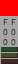

The Element of a Color
A color element is managed by following elements in the PoCo.app:
- R(red)
- G(green)
- B(blue)
Each element is represented by digit, the range of value is 0 through 255(i.e. 256 steps). 0 is minumum, 255 is maximum
Therefore, representing color is Black if value of all elements are 0. Representing color is White if value of all elements are 255.
Also, representing color is Yellow if R(red) and G(green) are 255 and B(blue) is 0.
Note that each element represeted by H(hue), L(lightness) and S(saturagion) if the color-mixing mode indicate HLS. However thier value only convert from above described RGB elements, so that can not manage by HLS color model.
Edit of Color Element
The value of each color element is able to edit(increase/decrease) with the detail of color on the palette window.
For each element description is described. This place primary/secondary click when want to edit each element.
| Color Sample |  | All elements are increased/decreased. Increased by sixteen when primary click. Decreased by sixteen when secondary click. |
|---|---|---|
| Red Tens |  |
Merely R(red) element is increased/decreased. Increased by sixteen when primary click. Decreased by sixteen when secondary click. |
| Red Ones |  |
Merely R(red) element is increased/decreased. Increased by one when primary click. Decreased by one when secondary click. |
| Green Tens |  |
Merely G(green) element is increased/decreased. Increased by sixteen when primary click. Decreased by sixteen when secondary click. |
| Green Ones |  |
Merely G(green) element is increased/decreased. Increased by one when primary click. Decreased by one when secondary click. |
| Blue Tens |  |
Merely B(blue) element is increased/decreased. Increased by sixteen when primary click. Decreased by sixteen when secondary click. |
| Blue Ones |  |
Merely B(blue) element is increased/decreased. Increased by one when primary click. Decreased by one when secondary click. |